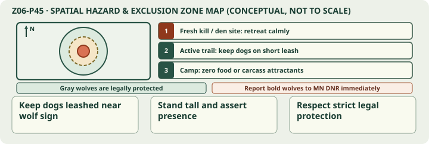

Z06-P45 · Hunting and fishing · New manuscript
Gray Wolf Legal Protection and Safe Encounter Boundaries
Respect federal/state legal protections for gray wolves while protecting pets and responding calmly to rare close encounters.
When it applies · Northern Minnesota forests, trails, and rural edges within wolf range.
Equipment · Short sturdy dog leash, flashlight/noise maker, DNR contact info.

Actions
- Respect that gray wolves in Minnesota carry strict federal and state legal protections; never feed, bait, approach, or unlawfully harass wolves.[H13, L03]
- Keep dogs on short leashes on trails and under close visual supervision near active wolf sign or hunting/baiting areas because domestic dogs can trigger territorial wolf aggression.[H13]
- If a wolf approaches closely and does not retreat, stand tall, wave arms, shout firmly, keep pets close, back slowly toward shelter, and report bold or food-conditioned wolves to MN DNR.[H13, H15]
Failure recognition · Letting dogs roam off-leash near fresh wolf tracks or feeding wildlife creates dangerous conflict and potential illegal-take incidents.[H13, L03]
Verify · Pets stay leashed in active wolf range, attractants are secured, and bold encounters are reported promptly to DNR.[H13, H15]
Stop or change course · Stop advancing along a trail showing fresh wolf kills or territorial howling; leash pets tightly and retreat calmly.[H13]
Evidence and editorial notes
- H13 · Minnesota DNR · Gray Wolves in Minnesota: Safety and Legal Protection (Current web edition)
- Section: Gray wolf legal status and encounter guidance · Conditions: Northern Minnesota wolf range
Support: Gray wolves are legally protected in Minnesota under federal/state status; maintain distance, keep pets leashed, secure attractants, and report bold behavior to DNR.
Limitations: Never feed, approach, or attempt to harass protected predators; verify current legal status before any assumption. · Conflicting evidence: None noted.
Editorial note: Protects endangered/managed carnivores and bystanders. · Specialist reviewer: Wildlife biologist and legal reviewer
Primary source · checked 2026-11-25 - H15 · Minnesota DNR · Turn In Poachers (TIP) and Conservation Officer Reporting (Current web edition)
- Section: Turn In Poachers (TIP) and wildlife incident reporting · Conditions: Suspected wildlife violations, injured game, or unsafe incidents
Support: Observe from a safe distance, record location, time, descriptions, and license plates without confronting suspects, and report to MN DNR TIP or Conservation Officers.
Limitations: Do not pursue armed or hostile individuals or disturb physical evidence. · Conflicting evidence: None noted.
Editorial note: Defines Z06/Z07 non-confrontational incident reporting. · Specialist reviewer: Conservation enforcement reviewer
Primary source · checked 2026-11-25 - L03 · U.S. Fish & Wildlife Service · Endangered Species Act Protections and Take Prohibitions (Current web edition)
- Section: Endangered Species Act strict take prohibitions · Conditions: Federal threatened and endangered species habitats (e.g., Canada lynx)
Support: Incidental or intentional capture, injury, or harassment of federally listed species violates the Endangered Species Act and triggers strict reporting and gear restrictions.
Limitations: Trapping zones near lynx or listed-species ranges carry additional federal/state exclusion rules. · Conflicting evidence: None noted.
Editorial note: Enforces ESA species protection in Z07. · Specialist reviewer: Federal wildlife legal reviewer
Primary source · checked 2026-11-25
Source lineage · New manuscript (Z06 P17 wildlife avoidance) · Classification · New manuscript.